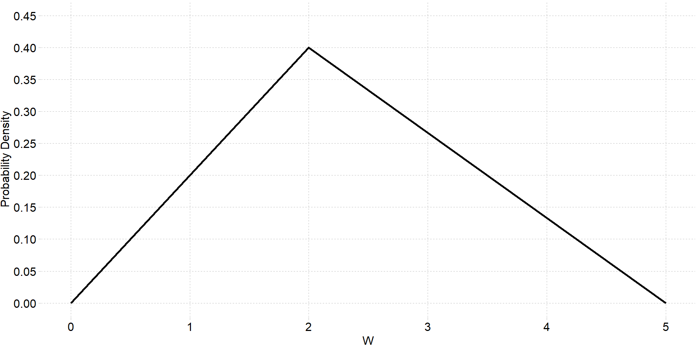

Week 7 Notes
STAT 251 Section 01
Named discrete distributions
Monday opens with the end of the probability section from the Week 6 notes: the general addition rule and independence, the examples on the heights table, sampling with and without replacement, random variables, discrete probability distributions and expected value. Those are written up there, starting at Combining two events.
Last week every probability distribution was built by hand: list the outcomes, count, add. Some random processes come up so often that their distributions have names and formulas. Each one is a probability model: a description of a chance process that, once we know a parameter or two, tells us the probability of every possible value. This week we meet three discrete models.
The Bernoulli distribution
- A Bernoulli trial is a single random trial with exactly two possible outcomes, called “success” and “failure”. The random variable \(X\) records a success as \(X = 1\) and a failure as \(X = 0\).
- Its distribution has one parameter, the probability of success \(p\):
| \(x\) | \(P(x)\) |
|---|---|
| 0 (failure) | \(1 - p\) |
| 1 (success) | \(p\) |
We write \(X \sim \text{Bernoulli}(p)\). Its mean and variance are \[\mu = p \qquad\qquad \sigma^2 = p(1 - p)\] (Homework 2 asks you to check these with the formulas \(\mu = \sum x\, P(x)\) and \(\sigma^2 = \sum (x - \mu)^2 P(x)\) from Week 6.) The name honors Jacob Bernoulli, the same Swiss mathematician who proved the law of large numbers.
“Success” does not have to be good news; it is just the outcome we are counting. A coin landing heads, a patient recovering, a part being defective and a voter supporting a candidate can all be successes.
Any categorical variable can be turned into a Bernoulli trial. Suppose \(Z\) records whether a randomly chosen person’s pet is a cat, a dog or a fish, with probabilities \(p_1\), \(p_2\) and \(p_3\). If what we care about is whether the person has a dog, call “dog” a success and everything else a failure. Then \(Y = 1\) for a dog owner, with probability \(p_2\), and \(Y = 0\) otherwise, with probability \(p_1 + p_3 = 1 - p_2\), so \(Y \sim \text{Bernoulli}(p_2)\).
Example: guessing one question
You guess on a multiple-choice question with 4 options, one of them correct. Let \(X = 1\) if the guess is right. Then \(X \sim \text{Bernoulli}(0.25)\):
- \(P(X = 0) = 1 - 0.25 = 0.75\);
- \(\mu = 0.25\) and \(\sigma^2 = 0.25 \times 0.75 = 0.1875\).
The mean of a 0/1 variable is the proportion of 1s, so \(\mu = 0.25\) says that in the long run a quarter of your guesses are right.
The binomial distribution
One Bernoulli trial is not very interesting. Repeat it, and count the successes. The textbook lists three characteristics of this binomial setting:
- A fixed number of trials \(n\), decided in advance.
- Two outcomes on every trial, success or failure, with the same probability of success \(p\) each time (and probability of failure \(q = 1 - p\)).
- Independent trials: the outcome of one trial does not change the probability of success on any other.
- A binomial random variable \(X\) is the number of successes in such a setting. Its distribution, the binomial distribution, has two parameters, \(n\) and \(p\), and we write \(X \sim \text{Binom}(n, p)\). (The textbook writes \(X \sim B(n, p)\).) A Bernoulli random variable is the special case \(n = 1\).
The probability of exactly \(k\) successes is \[P(X = k) = \frac{n!}{k!\,(n - k)!}\; p^k\, (1 - p)^{n - k}, \qquad k = 0, 1, \ldots, n\] and the mean and variance are \[\mu = np \qquad\qquad \sigma^2 = np(1 - p) \qquad\qquad \sigma = \sqrt{np(1 - p)}\]
The mean makes sense: in \(n\) trials that each succeed with probability \(p\), you expect \(np\) successes.
Where the formula comes from. The symbol \(!\) is a factorial: the product of all the positive whole numbers up to that number, \[n! = n \times (n - 1) \times (n - 2) \times \cdots \times 1, \qquad\text{so } 5! = 5 \times 4 \times 3 \times 2 \times 1 = 120\] and, by definition, \(0! = 1\). The first factor in the formula, the binomial coefficient \[\binom{n}{k} = \frac{n!}{k!\,(n - k)!}\] counts the number of different orders in which \(k\) successes can fall among \(n\) trials. Each one of those orders has probability \(p^k (1 - p)^{n - k}\) by the multiplication rule, because the trials are independent. Multiplying the two gives \(P(X = k)\).
Example: three tosses again
In Week 6 we found the distribution of \(X\) = the number of heads in 3 tosses of a fair coin by listing all 8 outcomes. That is the binomial setting with \(n = 3\) and \(p = 0.5\), so the formula should give the same answer: \[P(X = 2) = \frac{3!}{2!\,1!}\,(0.5)^2\,(0.5)^1 = 3 \times \frac{1}{8} = \frac{3}{8}\] The coefficient \(3!/(2!\,1!) = 3\) counts the three orders with 2 heads, HHT, HTH and THH, exactly the outcomes we counted by hand. The formula just saves us from listing them when \(n\) is large.
Example: guessing a whole quiz
You guess on all 10 questions of a 4-option multiple-choice quiz, so the number right is \(X \sim \text{Binom}(10, 0.25)\).
- \(P(X = 3) = \dfrac{10!}{3!\,7!}(0.25)^3(0.75)^7 = 120 \times 0.0156 \times 0.1335 \approx 0.250\)
- \(P(X = 0) = (0.75)^{10} \approx 0.056\): about 1 time in 18 you get every question wrong.
- \(\mu = 10 \times 0.25 = 2.5\) questions and \(\sigma = \sqrt{10 \times 0.25 \times 0.75} \approx 1.37\).
The whole distribution:
|
\(P(X = k)\) for \(k =\)
|
||||||||||
|---|---|---|---|---|---|---|---|---|---|---|
| \(0\) | \(1\) | \(2\) | \(3\) | \(4\) | \(5\) | \(6\) | \(7\) | \(8\) | \(9\) | \(10\) |
| 0.056 | 0.188 | 0.282 | 0.250 | 0.146 | 0.058 | 0.016 | 0.003 | 0.000 | 0.000 | 0.000 |
To pass with 6 or more right you need \(P(X \geq 6) = P(6) + P(7) + \cdots + P(10) \approx 0.020\), about a 2% chance. Guessing is not a strategy.
Example: tiger trout
A tiger trout is a sterile cross between a brown trout and a brook trout, raised in hatcheries and stocked into lakes and ponds. Suppose 500 of the 10,000 trout stocked in a reservoir are tiger trout and the fish are well mixed, so each fish caught is a tiger trout with probability \(p = 500/10{,}000 = 0.05\). (With 10,000 fish, catching a few barely changes the mix, so the catches behave like independent trials; see “Sampling with and without replacement” in the Week 6 notes.)
- The probability that the first fish you catch is a tiger trout is just \(p = 0.05\).
- The probability of at least one tiger trout among your first 10 fish is easiest through the complement: \[P(X \geq 1) = 1 - P(X = 0) = 1 - (0.95)^{10} \approx 0.401\]
Example: free throws
Stephen Curry has made 4,236 of the 4,645 free throws he has attempted in the NBA, so take \(p = 4236/4645 \approx 0.912\). If he shoots 10 free throws and the shots are independent, \(X \sim \text{Binom}(10, 0.912)\):
- \(P(\text{all } 10) = (0.912)^{10} \approx 0.40\), so even one of the best free-throw shooters ever misses at least one of 10 about 60% of the time;
- \(P(X = 9) = 10\,(0.912)^9(0.088) \approx 0.38\);
- on average he makes \(\mu = np = 10 \times 0.912 \approx 9.1\).
“At least” questions are easiest through the complement. The probability he makes at least 2 of the 10 is one minus the probability he makes fewer than 2: \[P(X \geq 2) = 1 - P(X < 2) = 1 - [P(0) + P(1)] = 1 - [0.088^{10} + 10(0.912)(0.088)^9] \approx 1 - 0.000000003\] which is 1 to eight decimal places.
Example: a lymphoma cluster?
A doctor in a rural California county finds that 71 of his 893 patients, about 8%, were diagnosed with lymphoma in the last year. In the US the rate of new lymphoma cases is about 21 per 100,000 people a year (SEER, 2018–2022: 18.7 for non-Hodgkin and 2.5 for Hodgkin lymphoma), so take \(p = 0.00021\). Before reporting to the CDC, the doctor asks how likely so many cases would be if his patients had only the national rate: \(X \sim \text{Binom}(893, 0.00021)\).
- At the national rate he should expect \(\mu = 893 \times 0.00021 \approx 0.19\) cases, less than one.
- \(P(X \geq 71) = 1 - P(X \leq
70)\), which is 71 terms of the formula. Software does it:
pbinom(70, size = 893, prob = 0.00021, lower.tail = FALSE)returns about \(1 \times 10^{-155}\). (Typing1 - pbinom(70, 893, 0.00021)returns exactly 0: the true answer is too small for the computer to tell apart from 1 - 1.)
A count this large is essentially impossible by chance at the national rate, so the doctor should report it. That is the logic of a hypothesis test, which is coming after Exam 2.
The shape of a binomial distribution

Each panel is \(\text{Binom}(10, p)\). With \(p = 0.5\) the distribution is symmetric. When \(p\) is small, the counts pile up near 0 and the distribution is skewed right; when \(p\) is large it is skewed left. In each case the peak sits near the mean \(np\): 2, 5 and 8. As \(n\) grows, the distribution becomes more and more bell shaped even when \(p\) is not 0.5, which is the central limit theorem at the end of this page.
Is it binomial?
Check the three conditions before reaching for the formula.
- The number of heads in 20 flips of a coin. Yes: \(n = 20\) is fixed, \(p = 0.5\) on every flip, and the flips are independent.
- The number of aces in a 5-card hand. No: the cards are dealt without replacement, so the draws are not independent. After an ace, only 3 of the 51 remaining cards are aces.
- The number of rolls of a die until the first six. No: the number of trials is not fixed in advance; it is the random variable. (This is the geometric distribution, textbook Section 4.4.)
The Poisson distribution
The binomial counts successes out of a fixed number of trials. Some counts have no “number of trials” at all: the number of goals in a soccer match, of emails in an hour, of defects in a sheet of glass. The Poisson distribution, named after the French mathematician Siméon Denis Poisson (1781–1840), models counts like these. A Poisson random variable counts events in a fixed interval of time or space when
- events occur independently: one event does not make another more or less likely;
- events occur at a constant average rate, the same in every part of the interval;
- two events cannot happen at exactly the same instant.
The distribution has one parameter, the rate \(\lambda\) (lambda), the average number of events in the interval. We write \(X \sim \text{Poisson}(\lambda)\), and
\[P(X = k) = \frac{\lambda^k\, e^{-\lambda}}{k!}, \qquad k = 0, 1, 2, \ldots\]
\[\mu = \lambda \qquad\qquad \sigma^2 = \lambda \qquad\qquad \sigma = \sqrt{\lambda}\]
There is no upper limit on \(k\). The number \(e \approx 2.718\) is Euler’s number, a constant that turns up throughout mathematics; every scientific calculator has an \(e^x\) button. (The textbook writes the parameter as \(\mu\) and the distribution as \(X \sim P(\mu)\).)
Other counts that are often modeled as Poisson: mutations on a strand of DNA, defective products per hour on an assembly line, bankruptcies filed in a month, and internet outages in a month.
Example: World Cup goals
The 2022 FIFA World Cup produced 172 goals in its 64 matches, so take \(\lambda = 172/64 \approx 2.69\) goals per match and let \(X\) = the number of goals in one match.
- \(P(X = 0) = e^{-2.69} \approx 0.068\).
- So out of 64 matches the model expects \(64 \times 0.068 \approx 4.4\) to end 0–0. There were actually 7. Close, but a model is never a perfect fit: real matches break the “constant rate” condition, since a team that falls behind attacks harder.
- Change the interval, change \(\lambda\). A 45-minute half is half a match, so the rate for one half is \(\lambda = 2.69/2 \approx 1.34\), and \(P(\text{no goals in a half}) = e^{-1.34} \approx 0.26\).
The standard deviation is \(\sigma = \sqrt{2.69} \approx 1.64\) goals. Here is the whole distribution:

Two goals is the most likely score total, then three. The distribution is skewed right: \(X\) cannot go below 0, but there is no upper limit.
The Poisson as an approximation to the binomial
When \(n\) is large and \(p\) is small, a binomial count behaves like a Poisson count with \(\lambda = np\). Back to the tiger trout: in a day’s catch of 100 fish with \(p = 0.05\), the number of tiger trout is \(\text{Binom}(100, 0.05)\), and
\[\text{binomial: } P(X = 5) = \frac{100!}{5!\,95!}(0.05)^5(0.95)^{95} \approx 0.180 \qquad \text{Poisson with } \lambda = 5\text{: } P(X = 5) = \frac{5^5 e^{-5}}{5!} \approx 0.175\]
The Poisson is far easier to compute. The textbook’s rule of thumb is that the approximation is good when \(n\) is greater than 20 and \(p\) is less than 0.05; at \(p = 0.05\) we are right at the edge, and the two answers still agree to two decimal places.
Continuous probability distributions
From histograms to density curves
So far a random variable’s values could be listed: 0, 1, 2, and so on. A continuous random variable, like a height, a time or a temperature, can take any value in an interval, so there are too many values to list and we cannot give each one a probability.
We have already seen the fix. In Week 6 a histogram of 150 years of Central Park January temperatures was smoothed into a density curve, and the proportion of Januaries in any range was the area under the curve over that range. A continuous probability distribution works the same way, with “proportion of the data” replaced by “probability”.
- The probability density function (pdf) of a
continuous random variable \(X\) is a
curve \(f(x)\) with three properties:
- \(f(x) \geq 0\) everywhere: the curve never dips below the \(x\)-axis;
- the total area under the curve is 1;
- probability is area: \(P(a < X < b)\) is the area under the curve between \(a\) and \(b\).
This is what the textbook means by “PROBABILITY = AREA”. Three consequences that trip people up:
- The height of the curve is not a probability. The \(y\)-axis measures probability density, and a density can be bigger than 1. Only areas are probabilities.
- Any single value has probability 0: \(P(X = c) = 0\), because the “area” over a single point is a line with no width. A height of exactly 70.000… inches has probability 0, even though heights near 70 are common.
- So for a continuous variable \(<\) and \(\leq\) give the same answer: \(P(X < c) = P(X \leq c)\).
Finding an area under a general curve takes calculus, which this course does not use. Instead we use simple shapes whose areas we can compute with geometry, and tables or software for the normal curve.
Example: a uniform distribution
A campus shuttle arrives every 20 minutes and you show up at a random time, so your wait \(X\) is equally likely to be anywhere between 0 and 20 minutes. Its density is flat: \[f(x) = \frac{1}{20} \quad\text{for } 0 \leq x \leq 20\] a rectangle with area \(20 \times \frac{1}{20} = 1\). This is the uniform distribution. Every probability is the area of a smaller rectangle, base times height:
- \(P(X < 5) = 5 \times \frac{1}{20} = 0.25\);
- \(P(4 < X < 15) = (15 - 4) \times \frac{1}{20} = 0.55\);
- \(P(X = 15) = 0 \times \frac{1}{20} = 0\);
- \(P(X > 15) = (20 - 15) \times \frac{1}{20} = 0.25\).

Example: counting boxes
The density of \(X\) below is a step function on a grid. Each box is \(0.25\) wide and \(0.16\) tall, so each box has area \(0.25 \times 0.16 = 0.04\).

There are 25 boxes under the curve in all, and \(25 \times 0.04 = 1\), so this is a valid density. The shaded region, to the left of 0, holds \(2 + 3 + 7 + 5 = 17\) boxes, so \[P(X < 0) = 17 \times 0.04 = 0.68\]
Example: a triangle
The density of \(W\) below rises in a straight line from 0 at \(W = 0\) to a peak of 0.4 at \(W = 2\), then falls back to 0 at \(W = 5\). The whole triangle has area \(\frac{1}{2} \times 5 \times 0.4 = 1\).

- \(P(W \leq 1)\) is the small shaded triangle. The density climbs \(0.4\) over 2 units, \(0.2\) per unit, so at \(W = 1\) its height is \(0.2\): \[P(W \leq 1) = \tfrac{1}{2} \times 1 \times 0.2 = 0.1\]
- \(P(W > 2)\) is the right-hand triangle, base 3 and height 0.4: \(P(W > 2) = \frac{1}{2} \times 3 \times 0.4 = 0.6\). So \(P(W \leq 2) = 1 - 0.6 = 0.4\).
Approximating an area with rectangles
When the curve is not made of straight lines, we can still approximate the area under it with rectangles, just as a histogram does. Take the normal model for the women’s heights from Week 6, \(X \sim N(65.4, 3.38)\), and the probability that a woman is between 62 and 70 inches tall:

The rectangles give 0.7628, then 0.7577, then 0.7561; the exact area
is \(P(62 < X < 70) = 0.7560\).
The thinner the rectangles, the closer the approximation. Calculus is
what you get by letting the rectangles become infinitely thin;
pnorm and the \(z\)-table
from Week 6 have done that work for us.
Cumulative probability
- The cumulative distribution function (cdf) of \(X\) gives the probability that \(X\) is at most a value \(x\), \(P(X \leq x)\): the area under the density to the left of \(x\).
This is the probability version of the cumulative relative frequency
from Week 3, and it is exactly what a \(z\)-table and pnorm give you.
Every other probability comes from it with two rules:
- Area to the right (complement rule): \(P(X > x) = 1 - P(X \leq x)\).
- Area between: \(P(a < X < b) = P(X \leq b) - P(X \leq a)\).
For the shuttle, \(P(X \leq x) = x/20\), so \(P(4 < X < 15) = 15/20 - 4/20 = 0.55\), the same answer as the rectangle.
Quartiles of a continuous distribution
The quartiles of a continuous random variable are the values that cut the area into quarters: \[P(X < Q_1) = 0.25 \qquad P(X < Q_2) = 0.50 \qquad P(X < Q_3) = 0.75\] so \(Q_2\) is the median. To find them, add up area from the left until you reach each target.

The areas of the five rectangles are 0.10, 0.15, 0.25, 0.20 and 0.30, and they add to 1.
- After the first two rectangles the area is \(0.10 + 0.15 = 0.25\), so \(Q_1 = 2\).
- The third rectangle adds 0.25, reaching \(0.50\) at \(x = 3\), so the median is \(Q_2 = 3\).
- At \(x = 5\) the area is \(0.70\). We need \(0.05\) more, and the last rectangle has height 0.05, so it takes 1 more unit: \(Q_3 = 6\).
The long right tail pulls \(Q_3\) much further from the median than \(Q_1\) is: this distribution is skewed right.
Mean and standard deviation of a continuous random variable
The mean \(\mu\) and standard deviation \(\sigma\) of a continuous random variable mean exactly what they meant for a discrete one, but computing them generally takes calculus.
- The mean \(\mu\) is the balance point of the density curve: if the curve were cut out of cardboard, it would balance on \(\mu\). For a symmetric density it is the center (10 minutes for the shuttle); for a skewed one it is pulled toward the long tail, past the median.
- The standard deviation \(\sigma\) measures the spread of the curve around \(\mu\).
The normal distribution, \(X \sim N(\mu,
\sigma)\), is the most important continuous distribution, and it
is the one case where the two parameters are the mean and
standard deviation. Everything in the Week 6 notes about finding areas
under it, with \(z\)-scores, the \(z\)-table and pnorm, is the
cdf rules above applied to a bell-shaped curve.
Next week we put these ideas to work on statistics. A sample mean or proportion is a random variable too, and its distribution, the sampling distribution, is the subject of the Week 8 notes.
Conclusion: what you should take away
Named discrete distributions
- Bernoulli(\(p\)): one trial, success (\(X = 1\)) with probability \(p\); \(\mu = p\), \(\sigma^2 = p(1 - p)\).
- Binomial(\(n\), \(p\)): the number of successes in a fixed number \(n\) of independent trials with the same \(p\). \(P(X = k) = \frac{n!}{k!(n - k)!}p^k(1 - p)^{n - k}\); \(\mu = np\), \(\sigma^2 = np(1 - p)\). Check all three conditions first: sampling without replacement from a small population, or a number of trials that is not fixed, rules it out.
- Poisson(\(\lambda\)): the number of events in a fixed interval when events occur independently at a constant average rate \(\lambda\). \(P(X = k) = \frac{\lambda^k e^{-\lambda}}{k!}\); \(\mu = \sigma^2 = \lambda\). Rescale \(\lambda\) when the interval changes.
Continuous distributions
- A continuous random variable has a density curve: never negative, total area 1, and probability = area. The height is density, not probability, and \(P(X = c) = 0\).
- \(P(X \leq x)\) is the area to the left (the cdf). \(P(X > x) = 1 - P(X \leq x)\) and \(P(a < X < b) = P(X \leq b) - P(X \leq a)\).
- Quartiles cut the area into quarters; the mean is the balance point.
Sources
- Illowsky, B. and Dean, S. (2023). Introductory Statistics 2e, Sections 4.3, 4.6 and 5.1. OpenStax. OpenStax: Introductory Statistics 2e
- 2022 FIFA World Cup: 172 goals in 64 matches, seven of them 0–0. Wikipedia, “2022 FIFA World Cup”, tournament statistics; Eurosport, “What is the record number of 0-0 draws at the World Cup”.
- Stephen Curry’s career free throws, 4,236 of 4,645. Basketball-Reference, Basketball-Reference: Stephen Curry career stats, checked October 5, 2026.